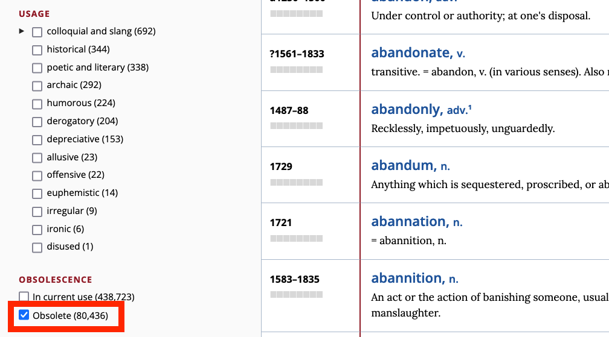

Lexical Change
Seminar ‘Lexicology’
July 2, 2025
Outline
- Warm-up: Language evolution in our lifetime
- History: The history of the English vocabulary
- Present-Day lexicon: Borrowing and diversity
- Types of lexical change: An overview
- Innovation & attrition: A closer look
- Practice: Studying lexical attrition with the OED
- Summary: Key takeaways
Warm-up: Language evolution in our lifetime
- Think of three words that have emerged or changed meaning during your lifetime
- What are the motivations behind coining, use, and spread of these words?
- Are these formal or semantic neologisms?
Examples to consider: smartphone, to google, influencer, Covid, viral, streaming
Now, think of words that have disappeared from the English vocabulary during your lifetime.
What are the motivations behind their disappearance?
The history of the English vocabulary
The Indo-European language family

English as part of the Indo-European family tree
Periods of English
Old English (ca. 450–1100)
External history
- 410 (traditional date according to Bede’s Historia Ecclesiastica Gentis Anglorum: 449): Angles, Saxons and Jutes (and some Frisians), speaking varieties of West Germanic languages, conquer the main British Isle → Germanic Conquest
- c. 700: earliest written documents in Old English
- from 6th century: Christianization
- Irish missionaries (c. 563 St. Columba to Iona)
- missionaries from Rome (c. 597; St. Augustine to Canterbury)
- from 8th century onwards: Viking raids and Danish settlement
- 793: sacking of Monastery of Lindisfarne
- 878: establishment of the ‘Danelaw’
Germanic conquest and Viking raids

Germanic tribes settling in Britain
Viking raids and the Danelaw
Linguistic characteristics
- Word order: Relatively free.
- Vocabulary: Germanic with some Latin (e.g., wine, cheese, street) and Scandinavian (e.g. take, die, sky) loanwords.
- Morphology: An inflecting/synthetic language; nouns and adjectives inflect for 4 cases, 2 numbers, and 3 grammatical genders.
Middle English (ca. 1100–1500)
External history
- 1066: Norman Conquest (William the Conqueror; Battle of Hastings)
- for more than three centuries, England was trilingual (‘Triglossia’): (Anglo-)French and Latin as ‘high variety’ and English as ‘low variety’
- from mid-14th century: English slowly reestablished in various domains (1349 English as language of education, 1362 opening of Parliament, literary language) → English re-introduced as high variety
High varieties
- Latin: church, learning, documents
- French: upper classes, feudal aristocracy
Low variety
- English: peasants, lower clergy, most people in cities
Middle English linguistic characteristics
- synthetic → analytic shift: breakdown of inflection due to weakening of final syllables (‘Entsilbenabschwächung’: /a/, /u/, /o/ > /ə/ > ∅)
- loss of grammatical gender (c. 1200): article the adopts natural gender
- increasingly fixed word order (less flexibility)
- dialect age: no generally accepted standard
- mass borrowing: war/military, administration/law, religion/church, fashion, social life → mixed Germanic/Romance vocabulary
- huge number of borrowings in the field of war/military, administration/law, religion/church, fashion, social life etc. (+ influence on word formation and stress patterns) → end of Middle English: mixed Germanic/Romance vocabulary
Early Modern English (ca. 1500–1800)
External history
- 1476: William Caxton introduces printing press to England
- 1492: discovery of America
- Renaissance and Humanism: rediscovery of classical authors and literature (e.g. translations of classical literature)
- 1534: Reformation
- 1611: King James Bible (first official English translation of the Bible for the English church)
- growing literacy → literacy spread down the social ranks, and from the male to the female sex (→ new reading public → translations needed)
Key linguistic developments
- Great Vowel Shift (c. 1400/1500): Raising and diphthongisation of long vowels, increasing the discrepancy between spelling and pronunciation.
- Inflectional system: The weakening and loss of inflections continues.
- Word order: Becomes more fixed (SVO).
- Standardisation: Development of the London dialect into a new standard.
- Orthography: Emergence of a standardised spelling system.
- Learned vocabulary: Influx of loanwords from Latin and Greek (‘hard words’).
Late Modern English (ca. 1800–1945)
External history
- from 1700s: British Imperialism → expansion of English all over the world (Australia, India etc.)
- 1700s/1800s: normativism and prescriptivism (1755: Samuel Johnson A Dictionary of the English Language → first comprehensive dictionary of the English language)
- 1900s: scientific and industrial revolutions → development of technical registers
Linguistic characteristics
do-periphrasis: Becomes obligatory in interrogatives and sentential negation (from 1700).- Grammaticalisation: Beginning of the progressive aspect and present perfect (from 1800).
- Pronunciation: Standard British English (RP) becomes non-rhotic.
- American English: An emergent standard develops.
- Global borrowing: Vocabulary expands with words from languages around the world, leading to vocabulary expansion and global influence.
Present-Day English (since ca. 1945)
External history
- New media: The rise of telephone, TV, internet etc. accelerates change.
- American English: Increasing importance and influence after WWI and WWII.
- Global English: Established as a world language and a lingua franca.
- Postcolonial Englishes: Increasing importance (e.g., Indian English), contributing to a truly global English shaped by technological change.
Present-Day English lexicon
A unique mixture
“Der heutige englische Wortschatz ist eine einzigartige Mischung von germanischen und romanischen Elementen; in Bezug auf das Vokabular stellt also das Englische einen Sonderfall unter den europäischen Sprachen dar.” (Leisi 2008: 41)
Most frequent words in English
Analysis based on COCA:
Top frequent words showing mixed origins
Languages of origin in high-frequency words
Scandinavian (Old Norse):
- they, their, to get, to take, to give, like, to want
French:
- people, very
French/Latin:
- just, to use
Germanic core vocabulary
Elements surviving from Old English form the basic vocabulary:
- Pronouns, conjunctions, auxiliary verbs
- Fundamental concepts:
- OE mann → man
- OE wīf → wife
- OE cīld → child
- OE hūs → house
- OE drincan → drink
- OE libban → live
Latin influence
Continental borrowings
- street, wine, kitchen, mile, butter, cheese
After settlement (post-450)
- port, mount, -chester
Christianisation
- martyr, clerk, creed, nun, verse
Renaissance and later
- humanist, abdomen, skeleton
Old Norse influence
Viking raids and the Danelaw
- Genetic resemblance between Old Norse and Old English
- Strong influence on basic vocabulary
Examples
- Function words: they, them, their, though
- Verbs: to call, to die, to take, to raise
- Nouns: law, husband, egg, birth
- Adjectives: awkward, ill, weak
Consequence: English drifts apart from West Germanic languages
French superstrate influence
Superstrate: socially/politically superior language influences inferior position
Government/Administration: authority, chancellor, council, court, crown, duke, empire, government, liberty, minister, noble, palace, parliament, prince, reign, royal, sovereign, treaty
Law: accuse, advocate, assault, attorney, blame, crime, evidence, fraud, jail, judge, justice, pardon, plaintiff, prison, punishment, verdict
Religion/Church: abbey, baptism, cathedral, charity, clergy, confess, divine, faith, immortality, mercy, religion, saint, sermon, temptation, virgin, virtue
Military/Warfare: ambush, army, battle, captain, combat, defend, enemy, guard, navy, peace, soldier, spy
Food: appetite, bacon, beef, cream, dinner, feast, fruit, herb, lemon, lettuce, mustard, mutton, olive, pork, salad, salmon, spice, veal
Fashion: diamond, dress, fashion, fur, garment, gown, jewel, lace, robe, satin, wardrobe
Loans from other languages
Portuguese/Spanish: marmalade, banana, cannibal, creole, mosquito, mulatto, tobacco
Italian: alarm, million, balcony, opera, piazza, sonnet, stanza
Greek: bible, character, climate, fantasy, horizon, tragedy
Arabian: admiral, elixir, hazard, mosque, alcohol, alchemy
Persian: azure, chess
Global loan words
Recent European loans and dialectal terms
Recent borrowings from European languages

Dialectal words entering standard English
Types of lexical change
Consequences of borrowing
Consociation vs Dissociation
Consociation: German
- Mund – mündlich
- Heiliger – heilig
- Fuß – Fußgänger
- Wort – wörtlich
- Buch – Buchstabe – Bücherei
Dissociation: English
- mouth – oral
- saint – holy
- foot – pedestrian
- word – verbal
- book – letter – library
Partial synonymy
Register differences
- to ask (c. 885) — neutral
- to question (c. 1470) — formal
- to interrogate (c. 1483) — official/legal
Connotational differences
- solitude vs loneliness
- freedom vs liberty
Result: Greater linguistic choice through partial synonyms
“Hard words”
Often etymologically unrelated → difficult to learn:
Examples of confusion (malapropisms)
- illiterate vs illegitimate
- missile vs missive
- epitaph vs epithet
Change in usage frequency
Lexical innovation
The interplay of cultural and linguistic innovation
- Society changes → new practices and products emerge
- Language changes first on the lexical level through neologisms
Examples:
- Formal neologisms: smartphone, iPhone, Covid
- Semantic neologisms: hotspot, Querdenker, social distancing, spreader
Lexical attrition
Word loss through decreased frequency:

Frequency decline of telephone in COCA
Frequency decline of Walkman in COHA
Meaning change
Semantic change over time:

Types and directions of meaning change
Common patterns: narrowing, broadening, amelioration, pejoration
Practice: studying lexical attrition
Objective
Study what types of words become obsolete using OED data and Excel analysis
Your task
- Collect obsolete words from the OED Advanced Search
- Export data as CSV
- Analyse patterns using Excel Pivot Tables
Step 1: OED Advanced Search
Using OED Advanced Search for obsolete words
- Search for obsolete words
- Apply relevant filters
- Select representative sample
Step 2: Export data
Exporting search results as CSV
Save your results for analysis in Excel
Step 3: Excel analysis

Creating a table in Excel
Use Pivot Tables to analyse:
- Word-formation processes
- Language of origin
- Subject areas
Model sheet: https://1drv.ms/x/s!AvkgNVl9yS6aohjiV_csX3J22GCB
Step 4: Corpus analysis
- Check the frequency of the obsolete words in a suitable corpus.
- Corpus options:
- english-corpora.org: COHA, COCA
- Sketch Engine: EEBO
- Investigate whether the words have really declined in frequency and whether the corpus data are in line with the OED data.
Summary
- English vocabulary is uniquely mixed: Germanic core + extensive borrowing
- Historical periods shaped vocabulary through different contact situations
- Multiple layers create rich but complex lexical system
- Lexical change involves innovation, attrition, and meaning change
- Empirical analysis reveals patterns in vocabulary change over time